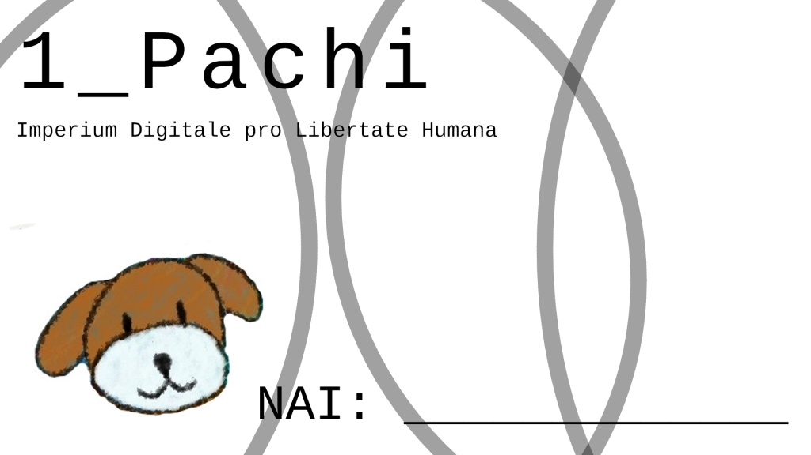
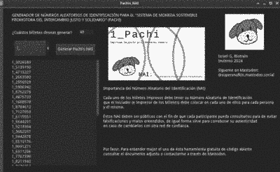

Invierno 2024
Versión 1.0
Este documento se encuentra en construcción, las notas de la versión actual se irán publicando en el repositorio GitHub del proyecto
Introducción (Contexto y por qué del uso del sistema)
Actualmente nuestra sociedad se encuentra en puntos extremos en los cuales, el viaje de un punto a otro sólo se logra a través de la acumulación o pérdida del dinero que se posea.
Por otra parte, el consumo desmedido provoca necesariamente desperdicios que pocas veces son aprovechados o reciclados. Es sorprendente la cantidad de alimentos, materias primas e incluso tecnología en buen estado que se puede encontrar en los basureros.
Es por lo anterior que propongo un sistema de intercambio que promueva el trueque de los bienes que nos sobren o parte de los servicios que podamos brindar con el fin de fortalecer nuestras comunidades y utilizar nuestro dinero de una forma más ética.
Definiciones:
Pachi
En Quechua significa “cambiar” o “invertir”, en Hindú significa “verde”. La elección del nombre es debido a que es fácil de pronunciar, y recordar, pero sobre todo, al juntar las dos definiciones antes mencionadas puede leerse como “intercambiar lo verde” o “invertir en lo verde” debido a nuestro profundo interés en la naturaleza.
Existe un perrito de peluche llamado Pachi, al que tengo mucho amor ya que me ha acompañado todos los días desde hace años.
Iniciador y participante
Iniciador: Persona que comienza la red de confianza, la administra y lidera.
Participante: Persona que decide por voluntad propia tomar, la responsabilidad dentro de la red de confianza de intercambiar bienes y servicios, así como seguir el reglamento con respeto y solidaridad.
Nota: Ninguna persona, ni el iniciador ni el participante está por encima del Sistema de Moneda Sostenible Promotora del Intercambio Justo y Solidario, ninguna de las dos figuras vale más que la otra, ni el participante ni el iniciador tiene privilegio alguno, ambas figuras valen exactamente lo mismo en la red de confianza. El Sistema puede modificarse a conveniencia siempre y cuando se respete la solidaridad, la ética y el intercambio sostenible con respecto a la naturaleza y el bien para el planeta.
Red de confianza
Grupo de 7 personas (6 participantes y 1 iniciador) que deciden tomar responsabilidades éticas y sostenibles. Usan el sistema con responsabilidad, los bienes y servicios que intercambian es con el único fin de mejorar la comunidad y fortalecer las relaciones solidarias.
Anatomía del papel moneda Pachi
La anatomía es muy sencilla, se muestra la cantidad de Pachis, un gráfico sencillo y el lugar dónde colocar el NAI. Los archivos de edición de los gráficos y el texto está disponible para Software de código abierto.
Manual del iniciador
El siguiente manual tiene cómo fin facilitar la tarea del iniciador, antes quiero mostrar mi gratitud por tan noble labor.
A continuación se muestra la forma más sencilla de poner el sistema en marcha.
Repartición
Se repartirán 700 pachis para cada persona de la red de confianza incluido el iniciador de la siguiente manera:
Billete de 50 Pachis — x4
Billete de 20 Pachis — x5
Billete de 10 Pachis — x10
Billete de 5 Pachis — x12
Billete de 1 Pachi — x 40
Herramientas informáticas de código abierto
Usando la herramienta informática de código abierto proporcionada a continuación se generan números aleatorios para cada denominación, por ejemplo: 10_9570410 donde: “10_” es la denominación de la cantidad de Pachis y “9570410) es el número aleatorio de identificación (NAI).
1.- La primera herramienta está escrita en el lenguaje de programación Python en su versión 3.8, puede ejecutarse en cualquier sistema operativo de escritorio así como en dispositivos móviles.
Recomendamos utilizar sistemas operativos de código abierto. Para instalar Python (en caso de no tenerlo) basta con seguir las sencillas instrucciones proporcionadas en: www.python.com (Sistemas operativos basados en GNU/Linux o MacOS ya tienen Python preinstalado).
En sistemas operativos móviles existen aplicaciones para correr el código cómo “Pydroid 3”.
2.- Si se prefiere, se puede utilizar el software escrito en Godot 3 con una interfaz de usuario amigable, se puede utilizar en sistemas Linux y en sistemas Windows en caso de no contar con algún otro SO.
El uso de la herramienta es sencillo, se colocan la cantidad de NAI’s que se desean generar, se selecciona la nomenclatura (1_, 5_, 10_, 20_ o 50_ ) y se da click en “Generar Pachi’s NAI”
Puedes descargarlo aquí.Importancia del Número Aleatorio del Identificación (NAI)
Cada uno de los billetes impresos deben tener su Número Aleatorio de Identificación que el iniciador (e impresor de los billetes) debe colocar en cada uno de ellos para cada persona y él mismo. Éstos NAI deben ser públicos con el fin de que cada participante pueda consultarlos para de evitar falsificaciones y malos entendidos, de igual forma sirve para corroborar su autenticidad en caso de cambiarlos con otra red de confianza.
Publicación de bienes y servicios
Cada persona de la red de confianza puede hacer públicos los bienes y servicios que esté dispuesto a intercambiar por Pachis. Para lo anterior, el iniciador debe elaborar un grupo público de publicación en alguna de las siguientes aplicaciones de mensajería propuestas:
Signal
Jami
SimpleX
Nota: Se recomienda evitar el uso de aplicaciones privativas como “Whatsapp”, “Google” o cualquier servicio de Meta.
La publicación deberá de tener información importante que defina lo siguiente:
1.- Nombre del bien o servicio
2.- Breve descripción
3.-Costo en Pachis
4.-Lugar de intercambio del bien o prestación del servicio
Una buena práctica es que el iniciador haga la primera publicación en el grupo con todos los NAI de cada uno de los Pachis que tiene cada persona de la red de confianza.
La mejor forma de entender el sistema
Con el siguiente ejemplo simple, el sistema puede comprenderse de forma básica:
Supongamos que existen tres amigos, los cuales tienen $1000 pesos mexicanos cada uno. Cómo todas las personas, tienen necesidades e intereses en particular y deciden utilizar Pachis.
La persona 1, vende dos platos de comida fresca que le sobraron de ese día en 50 pachis cada uno.
La persona 2, da clases de violín a 30 pachis la hora.
La persona 3, vende manzanas de su huerto a 10 pachis cada una.
La persona 2 le compra comida a la persona 1, la persona 3 toma clases de violín con la persona 2 y la persona 2 compra una manzana a la persona 3.
Los tres amigos satisficieron sus necesidades ese día a través del sistema Pachi.
Los tres amigos mantuvieron intactos sus $1000 pesos mexicanos.
Se pretende que, en la red de confianza (Los tres amigos se conocen bien) se promuevan bienes y servicios, objetos que sobren o se tengan sin usar, alimentos en buen estado que sobren con el fin de no desperdiciarse o que signifiquen formas de promover la solidaridad.
Consideraciones finales importantes
-Los Pachis son una moneda en movimiento, NO ACUMULATIVA.
-Los Pachis pueden ser intercambiados por bienes y servicios.
-Cada persona en la red de confianza tendrá 700 Pachis incluido el iniciador. Cada persona puede renunciar en cualquier momento. Los Pachis a los que renuncie deberán ser entregados al iniciador, quien deberá cotejar los NAI con la lista de NAI publicada. Después, deberá destruirlos en su totalidad frente a toda la red de confianza.
-El valor de los bienes y servicios será determinado por los tratantes.
-Los Pachis como tal, no tienen valor. Son sólo el medio por el cual se promueve un intercambio justo y solidario dentro de la red de confianza.
-Se espera que los bienes y servicios sean cosas que sobren, se reciclen o sean sostenibles.
Notas Legales
Para futuras referencias, es importante recordar las siguientes notas legales que, al igual que con los Túmin en México o con la Juna en Europa, mantienen al sistema al margen de la ley, proporcionando legalidad y estabilidad.
1.- Complemento, no sustitución
Es un sistema paralelo de intercambio que coexiste con la moneda nacional, lo que garantiza que no entre en conflicto con las leyes que regulan la moneda nacional.
2.- Libre acuerdo
Las redes de confianza son completamente voluntarias.
3.- Autonomía local.
Los Pachis NO pretenden tener valor alguno a nivel nacional o en el mercado financiero formal.
4.-Apoyo social y financiero
Los Pachis se promueven cómo una herramienta para fortalecer economías locales, fomentar el intercambio justo y crear redes de solidaridad. Es desarrollo comunitario.
Conclusiones
El presente sistema pretende ser un apoyo a personas y comunidades que realmente lo necesiten. Aquellas comunidades o personas que se ven sofocadas por el sistema económico actual, aquellos que se ven desempleados o que no ganan el suficiente dinero debido a malas prácticas empresariales.
Se desea que el sistema favorezca a todas las redes de confianza que se generen con el fin de que el dinero oficial que se posea sea utilizado de la mejor forma posible y que los bienes o servicios que se ofrezcan fortalezcan a la comunidad.
Es momento de contemplar al dinero oficial como un simple medio de intercambio, no único ni todopoderoso. De esa forma lograremos emanciparnos de deseos mal encaminados y ser un poco más crítico con nuestro consumo de bienes y servicios, así como nuestro consumo cultural.
___________________________________________________
Este documento, los gráficos y código se elaboraron utilizando software de código abierto.
Sistema operativo: Trisquel SO
Para escritura: LibreOffice
Gráficos: Krita y GIMP
Para el código informático: Godot3 y Python3
A continuación se ofrece el diseño de cada billete Pachi con el fin de que se impriman a conveniencia, a su vez, se adjunta a éste documento los archivos .xfc y .kra correspondientes a GIMP y Krita para su modificación en caso de requerirlo.
Descárcalo desde aquí.Gracias por leer
Por: Israel G. Bistrain 2024
Si lo deseas puedes seguirme en Mastodon:
@supersnufkin@mastodon.social